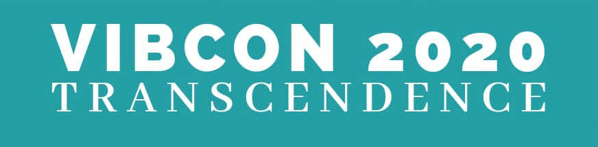

Apr 20, 2020 to Apr 21, 2020
The last few years have seen the emergence and growth of undergraduate medical conferences in several medical colleges across the country. What was once thought to be an event for consultants and PG students, has now gained immense popularity among students of MBBS.
Medical conferences allow undergraduates to go a step further from their routine academics and get a glimpse of the practical applications and implications of what they learn in books. Workshops and drills equip students with hands-on experience in essential clinical skills whereas research presentation opens their minds to question already acquired knowledge. Events such as the medical symposium give students a unique platform to integrate research, problem solving and creativity. All in all, these events help broaden the students' horizons and give them a fresh perspective on medicine.
Keeping this in mind, we bring to you a 2-day long undergraduate academic congress, the first of its kind in the history of Medical College, Baroda. The first edition of VIBCON Transcendence, the pre-Vibrant UG medical conference, will have a plethora of events and activities, all of which will be aimed at enriching the the participants by taking a step beyond the routine MBBS curriculum.
Events
Workshops
Workshops will be aimed at engaging students in interactive learning sessions; providing the most up-to-date information and strategies; and developing or enhancing skills that they may apply in clinical practice, research, or teaching.
Workshops Category A
Basic Surgical Skills
Stroke Management
Workshops Category B
ECG Implementation & Red Flag Signs
Basics of Oncology
Basics of Radiology
Orations
Eminent doctors will be invited to share their knowledge, experiences and new developments in the field of medicine.
Quiz-picable
The pre-and paraclinical quiz
Rules and regulations
- This quiz includes all preclinical and paraclinical subjects in the undergraduate medical curriculum
- Each team should consist of 3 members, all of whom should be from the same institute.
- The quiz will have various interesting and innovative rounds related to the above-mentioned subjects.
- There will be a written elimination round that the teams will have to appear, in which there will be 30 objective questions and a time of 30 minutes will be given for the same.
- 8 teams will be chosen on the basis of the elimination round and will proceed to the finals.
- For the final rounds, the quizmaster’s decision will be final.
Registration Procedure
- The teams will register themselves online, through the website. The team leader shall register for the entire team.
- Participation will be confirmed once payment is received and confirmation message will be sent.
- All the participants must have a delegation card for conference.
- Spot registrations are subject to availability
Prizes
- 1st prize
- Runner’s up
Serendipity
Being a student is easy. Learning requires actual work.
— William Crawford
Being the future, the responsibility of medical healthcare lies upon our shoulders. Poster presentation is an event which offers you the opportunity to expand your horizons and make a mark on your community.
Rules and regulations
- The topic of the poster should be medically relevant.
- Only individual entries shall be accepted.
- The poster presentation should not exceed 5 minutes. This will be followed by a question answer round by the judges.
- Presentation time of 4 minutes shall be allotted, followed by Question and Answer round by the judges.
- Each participant must send in the abstracts of less than 500 words before the deadline. The abstract should comprise of the following headings:
- Title
- Introduction
- Aims and objectives
- Methodology
- Results
- Discussion
- Conclusion
- The abstracts will be screened and selected posters will be presented on the day of the event.
Registration Procedure
- The participant will register themselves through the website.
- The participation will be confirmed by submission of abstract.
- The poster presentation should not exceed 5 minutes. This will be followed by a question answer round by the judges.
- Abstracts should be submitted one month before the deadline.
Judging
- The final event will be judged by 3 judges. This will be decided by the committee comprising of various faculty members.
- Criteria of Judgement:
- Originality of Topic
- Poster design and appeal
- Diction
- Question Answer round
- Overall coherence and message
- The abstracts will be screened and selected posters will be presented on the day of the event.
Ubuntu
All maladies have tales to tell.
This event gives the participants chance to present intriguing and unique cases, that appeals to and gives new information to all the future doctors.
Put your clinical acumen to the test in the Ubuntu Case Presentation Competition! Because sometimes you win and sometimes you learn.
Rules and regulations
- Only individual entries will be accepted.
- This competition is only for UG students and interns.
- The presentation should comprise of only the relevant positive and negative findings in history, vital parameters on examination, general and systemic examination findings, differential diagnoses proposed, laboratory/special investigations, final diagnosis, therapeutic/surgical interventions made, their outcomes and finally a summary of all the above.
- Presentation time of 4 minutes shall be allotted, followed by Question and Answer round by the judges.
- Participants need to send an abstract of their case report before 4th April 2020 to casepresentation.transcendencebmc@gmail.com. Abstracts will be screened and the list of selected participants for the final presentation will be declared by the second week of April'20.
- The presentation should be strictly in MS Office 2010 or higher versions.
- The abstract shall be in the following format with a maximum of 1000 words:
- The abstract should not exceed 500 words. The contents of the abstract should be under the headings: Title, Introduction, Case Report, Discussion.
- Judging will be based on choice of case, clarity of thought, conciseness, subject knowledge and confidence.
- The judges’ verdict shall be binding.
- Abstract Submission Fees: Rs.100/-
Meraki
The Medical Symposium is a unique platform for students to showcase their knowledge, inquisitive thinking, problem solving skills and creativity on a medical topic of social relevance. It is a team event wherein a team of undergraduate students presents their topic, shares results of research on that topic and concludes by suggesting ways to improve the current scenario. All this is summed up in a crisp and dynamic narrated presentation.
The participating team first identifies a medical problem/issue of social relevance in the society today, which is followed by comprehensive research to understand the problem at the grassroots level. After a thorough analysis of the issue at hand, the team brainstorms and comes up with means to tackle the problem. Backed by statistical evidence, the team presents its work in the form of a PowerPoint presentation with live narration. The presentation is followed by a question answer session.
Rules and regulations
- The topic of the presentation should be medically relevant which can be based on any of the following: clinical, para- clinical, laboratory or community and allied subjects.
- The topic selected should strictly have a social relevance. Examples of such topics include “Irrational Use of Antibiotics”, “HIV/AIDS”, “Geriatric Health” etc.
- Each team should consist of a minimum of 6 members and maximum of 12 members, all of whom should be undergraduate students. Some team members will be speakers, some researchers and other techies.
- The team should have a minimum of 4 and a maximum of 6 speakers in total.
- The presentation should not exceed 15 minutes. This will be followed by a question answer round.
- The presentation should be made in MS PowerPoint
- The teams must bring their own laptops. The laptop will be connected to the projector.
- Each team must send in the abstracts of more than 500 words before the deadline. The abstract should comprise of the following headings:
- Title
- Introduction
- Aims and Objectives
- Methodology
- Results
- Discussion
- Conclusion
Registration Procedure
- The teams will register themselves through an online form.
- The participation will be confirmed by submission of abstract.
- Abstracts should be submitted one month before the date of the conference.
Judging
- The event will be judged by 3 judges. This will be decided by the committee comprising of various faculty members.
- Criteria of Judgement:
- Originality of Topic
- Research methodology
- Diction
- Audio-visual presentation
- Question Answer round
- Overall coherence and message of symposium
Prizes
- Best Symposium: First Prize
- Best Speaker
- Cash prizes worth Rs. 5000!
Venue
- Main Auditorium